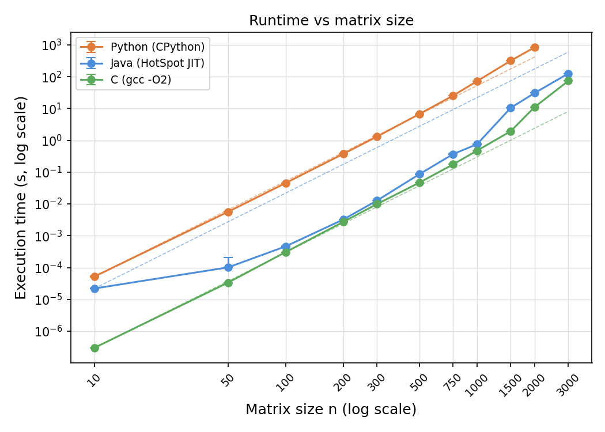
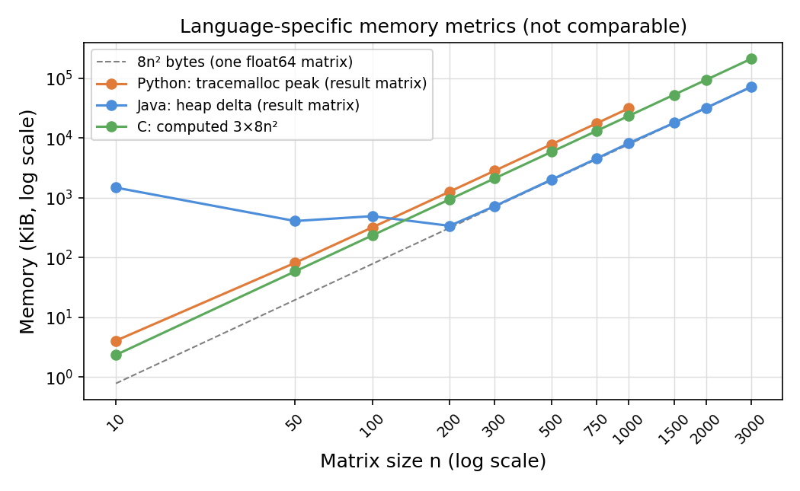

-O0) across matrix sizes from n = 10 to
n = 1000. Runtime grows cubically in all three languages. Java achieves the lowest execution time,
outperforming C compiled without optimisation flags due to JIT compilation. Python is consistently
the slowest, reaching approximately 12 minutes at n = 1000. Memory usage scales as O(n²) across all
implementations. Results are scoped to the tested hardware, settings and input sizes.
Matrix multiplication is a fundamental operation in scientific computing. Its naive implementation requires O(n³) arithmetic operations for n × n matrices, making performance differences across languages clearly visible as n grows.
Research question: How does matrix size affect the runtime and memory usage of a naive triple-loop matrix multiplication implemented in Python, Java and C, when each language runs in its standard execution environment?
Hypothesis: Runtime will grow cubically for all three implementations. Languages closer to the hardware (C, Java) are expected to be faster than an interpreted language (Python).
The standard triple-loop algorithm computes C[i][j] = Σ A[i][k] · B[k][j] for all i, j, k, performing n³ multiply-accumulate operations. Its theoretical complexity is O(n³) in time and O(n²) in space for the output matrix.
The three languages differ fundamentally in how they execute code:
Each implementation uses the same ijk triple-loop order and 64-bit floating-point arithmetic
(Python float, Java double, C double).
No optimised library calls are used for the multiplication itself.
Storage is row-major in all three cases (Python list-of-lists, Java double[][], C flat array).
Before benchmarking, each implementation verifies three cases: A × I = A (identity), A × 0 = 0 (zero matrix), and a 2 × 2 product with known result ([[1,2],[3,4]] × [[5,6],[7,8]] = [[19,22],[43,50]]). All checks passed.
Matrices are generated with a fixed random seed (42 for A, 43 for B) using each language's standard PRNG, with values uniformly distributed in [0, 10]. Cross-language PRNGs differ, so the matrices are not bit-identical, but they share the same statistical properties and size.
| Item | Value |
|---|---|
| CPU | Intel Core i7-13700KF (16 cores, 24 threads) |
| RAM | 31.8 GB |
| OS | Windows 11 Pro |
| Python | CPython 3.11.9 — no JIT, no external libraries for multiplication |
| Java | OpenJDK 21.0.12 (Microsoft Build) — JIT enabled (default) |
| C compiler | gcc 16.1.0 (MSYS2/MinGW64), flags: -O0 |
time.perf_counter() (Python),
System.nanoTime() (Java),
QueryPerformanceCounter (C). All measure wall-clock time of the
multiplication kernel only; input generation is outside the timed region.tracemalloc (Python); heap delta
via Runtime.totalMemory() − freeMemory() after gc() (Java);
theoretical allocated matrix storage 3n² × 8 bytes (C — exact, since allocation is explicit).| n | C (s) | Java (s) | Python (s) |
|---|---|---|---|
| 10 | 0.000002 | 0.000022 | 0.000202 |
| 50 | 0.000229 | 0.000140 | 0.028243 |
| 100 | 0.001786 | 0.000444 | 0.344134 |
| 200 | 0.014107 | 0.003165 | 1.801821 |
| 300 | 0.049343 | 0.013094 | 11.699590 |
| 500 | 0.235239 | 0.085622 | 58.140186 |
| 750 | 0.943930 | 0.365947 | 284.902533 |
| 1000 | 2.125408 | 0.989217 | 721.430916 |
Values are medians over 5 repetitions. IQR was below 2% of the median in all configurations.

| n | C (KB) | Java (KB) | Python (KB) |
|---|---|---|---|
| 10 | 2.3 | 41.6 | 1.2 |
| 100 | 234.4 | 86.9 | 312.5 |
| 300 | 2109.4 | 747.8 | 2825.1 |
| 500 | 5859.4 | 2008.4 | 7837.7 |
| 1000 | 23437.5 | 7952.3 | 31307.1 |

All three implementations show clear cubic growth. From n = 100 to n = 200 (factor of 2), runtimes multiply by approximately 8 (2³), consistent with O(n³). From n = 200 to n = 1000 (factor of 5), the expected multiplier is 125; observed values are 151× (C), 313× (Java) and 401× (Python), which deviates from pure cubic due to cache effects at larger sizes.
A notable result is that Java consistently outperforms C. This is explained by the difference
in execution model: C is compiled with -O0, which disables all compiler
optimisations, while Java's JVM applies JIT compilation at runtime after the warm-up phase.
The JIT identifies the hot inner loop and generates optimised native code, including efficient
register allocation and instruction scheduling. This is not a general claim about the languages:
C compiled with -O2 or -O3 would be significantly faster than Java.
The result reflects the chosen conditions — each language in its standard runtime environment,
with C intentionally unoptimised to isolate the algorithm from compiler transformations.
Python is approximately 340× slower than C and 730× slower than Java at n = 1000. CPython interprets each bytecode instruction individually, performs dynamic type checks on every operation, and represents numbers as heap-allocated objects. These overheads dominate the inner loop and explain the large constant factor relative to compiled implementations.
Memory scales as O(n²) in all three cases, consistent with storing three n × n matrices. The C measurement reports exact allocated storage (3n² × 8 bytes), while Python and Java report runtime-level metrics (heap peak and heap delta respectively) that include object headers and allocator overhead. These metrics are not directly comparable, which explains why Python reports more memory than C despite the same logical data.
All three implementations exhibit the expected O(n³) runtime growth. Under the tested conditions
— each language running in its standard execution environment — Java achieves the lowest
execution time due to JIT compilation, followed by C (-O0), then Python.
Python's interpreter overhead makes it unsuitable for large-scale naive matrix multiplication.
Memory usage scales quadratically in all cases, with differences explained by the measurement
method rather than the algorithm.
These conclusions apply strictly to the tested implementation, hardware, and settings. Compiler optimisations (addressed in Assignment 2) would substantially change the relative performance of C.